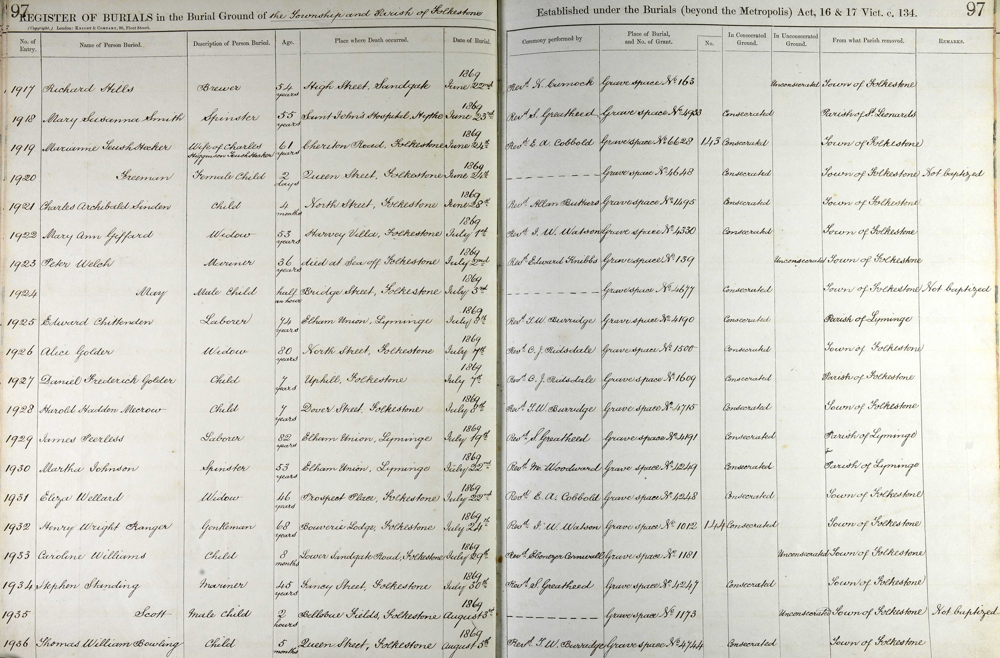
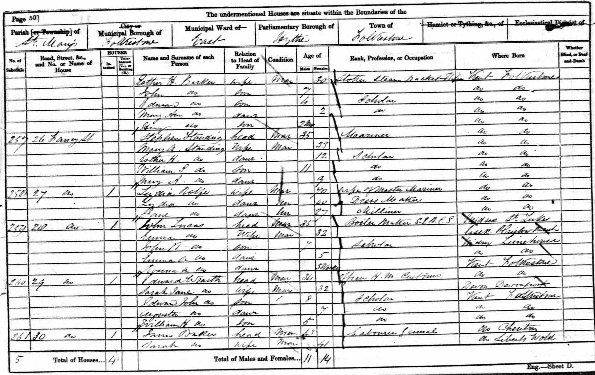
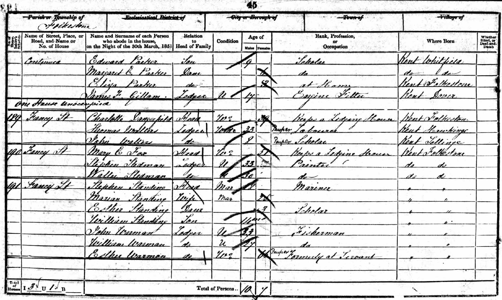
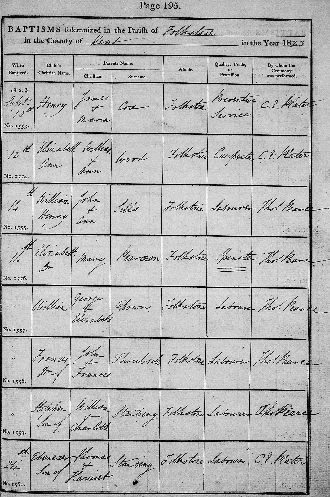
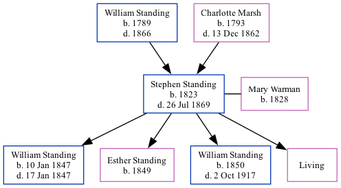

Stephen Standing 1823 - 1869
[ Home ] | [ Calendar ] | [ Surnames Index ] | [ Family History ]A laborer and mariner and the child of William Standing (an agricultural laborer) and Charlotte Marsh, Stephen Standing, the first cousin four-times-removed on the father's side of <a href="I1.html">Nigel Horne</a>, was born in Folkestone, Kent, England in 1823<span class="citation">1,2,3,4</span>, was baptized there at The Parish Church of St Mary and St Eanswythe, Church St on Sep 14, 1823 and also married Mary Warman (with whom he had 4 children: <a href="I1770.html">William</a>, <a href="I1092.html">Esther Hannah</a>, <a href="I1093.html">William Stephen</a> and <a href="I1091.html">Mary Ann</a>, along with 1 surviving child) there at The Parish Church of St Mary and St Eanswythe, Church Street, on Nov 28, 1846<span class="citation">5</span>.</p><p>Throughout his life, he lived on Fancy Street in Folkestone on Mar 30, 1851<span class="citation">1</span>; and at 26 Fancy Street in Folkestone on Apr 7, 1861<span class="citation">8</span>. <p>He died on Jul 26, 1869 at Fancy Street in Folkestone<span class="citation">3,4</span> (pneumonia) and was buried at The Parish Church of St Mary and St Eanswythe, Church Street, Folkestone on Jul 30, 1869<span class="citation">4,6,7</span>.
Parents
- William was born in 1789
- Charlotte was born in 1793
Children
- William was born on Jan 10, 1847
- Esther Hannah was born in 1849
- William Stephen was born in 1850
Citations
- 1851 England, Wales & Scotland Census - Findmypast (was age 28 and the head of the household)
- 1861 England Census Online publication - Provo, UT, USA: The Generations Network, Inc., 2005.Original data - Census Returns of England and Wales, 1861. Kew, Surrey, England: The National Archives of the UK (TNA): Public Record Office (PRO), 1861. Data imaged from the National
- England & Wales, FreeBMD Death Index: 1837-1915 Online publication - Provo, UT, USA: The Generations Network, Inc., 2006.Original data - General Register Office. England and Wales Civil Registration Indexes. London, England: General Register Office. © Crown copyright. Published by permission of the Cont
- England, Select Deaths and Burials, 1538-1991 Ancestry.com Operations, Inc.
- England & Wales Marriages 1837-2005 - Findmypast
- England Deaths & Burials 1538-1991 - Findmypast
- England Deaths & Burials 1538-1991 - Findmypast
- 1861 England, Wales & Scotland Census - Findmypast (was age 35 and the head of the household)
Notes
Height: 5' 3.5"
Eyes: Grey
Hair: Brown.
Media
Stephen Standing - Mary Warman - marriage certificate

Stephen Standing - death certificate

Stephen Standing - buirial record

1861 UK Census

1851 UK Census

Stephen Standing - Baptism

Registration of Merchant Seaman's Ticket

Record of Merchant Seaman's Ticket

Register of Merchant Seaman's Ticket

Registration of Merchant Seaman's Ticket (2)

England Deaths and Burials 1538-1991 Transcription - R_277040190
1861 England, Wales & Scotland Census Transcription - GBC-1861-0003620797
England & Wales deaths 1837-2007 Transcription - BMD-D-1869-3-AZ-000292-364
1851 England, Wales & Scotland Census Transcription - GBC-1851-0005967396
Kent, Canterbury Archdeaconry burials 1538-1988 - GBPRS/CANT/D/95111648
England, Births & Baptisms 1538-1975 Transcription - R_22085483991
Canterbury Baptisms Transcription - GBPRS-CANT-B-96145634
Canterbury Marriages Transcription - GBPRS-CANT-M-97001461-1
England, Births & Baptisms 1538-1975 Transcription - R_884232350
England, Births & Baptisms 1538-1975 Transcription - R_885250261
England & Wales marriages 1837-2005 - BMD/M/1846/4/RZ/000172/036
England Deaths & Burials 1538-1991 - R_276351769
Family Tree
Generated by Ged2Site. Last updated on Jul 20, 2025